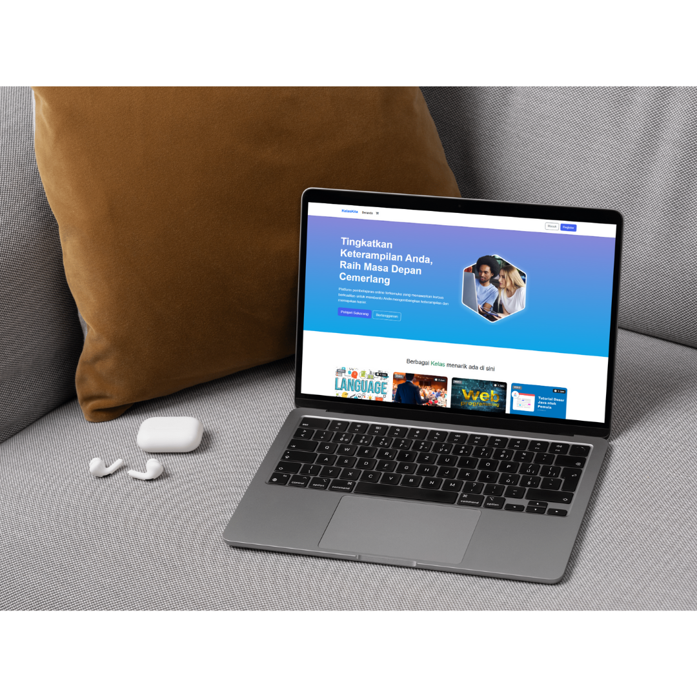

My Projects 🚀

My Photography
A collection of my favorite shots. Click the button below to see the full gallery.

Mobile App KelasKita UI/UX Design
A collaborative project for our UI/UX Design course. Our team designed a high-fidelity prototype aimed at boosting user productivity.

Portfolio Website
Developed a responsive bootcamp website as a collaborative final project for our Website Programming course.
Creative Portfolio

Video Production
Professional video editing and production for news segments at ITN News and Sampit TV, as well as organizational content.

Design Production
Social media branding and graphic design projects for OSIS SMKN 3, GenBI Telkom University, and various digital campaigns.

Creative Digital Presence
A mix of technical education (SQL & Odoo), on-camera talent roles, and community volunteering experiences.
*Best viewed on Canva for interactive links and videos.